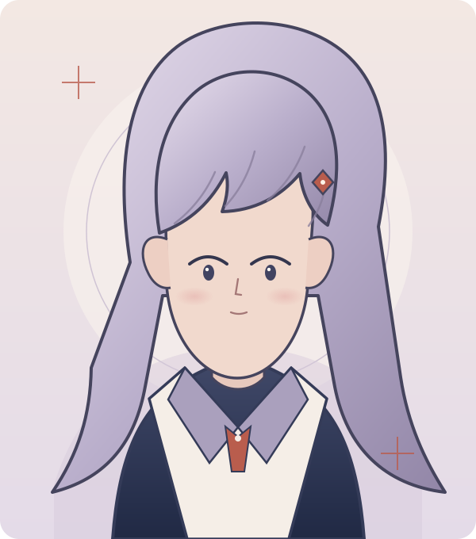
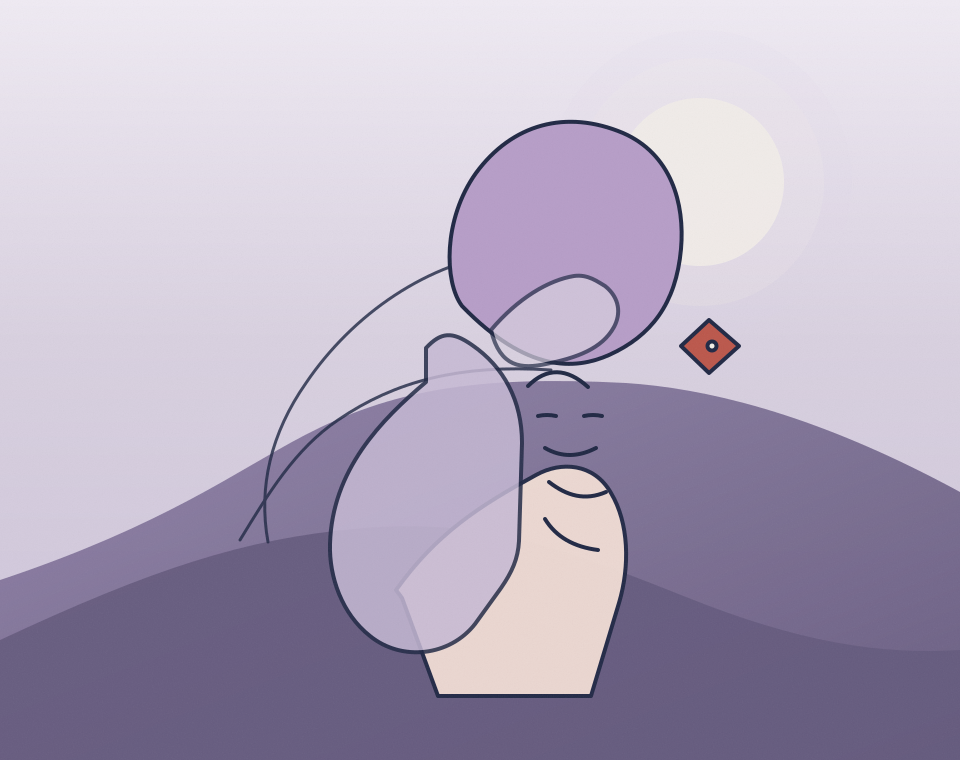

待机 / IDLE
标准微笑，眼神柔和但无特定焦点。完美少女的出厂设置。
A STUDY OF ORDINARY MYSTERY · 2026
KANOJO KA NO YUI
被定义的少女，行走的日常系谜题。
在治愈的框架内，试探着怪诞的边缘。

IDENTITY IS A SOFTLY DRAWN BORDER
“彼女彼”是重复的指代符号，
“由衣”是被赋予的容器名。
她并非拥有完整社会关系的“人”，而像一个为了回应期待而存在的界面。温柔是默认设置，沉默则是没有写进说明书的部分。
在安全、熟悉的日常里，某些细节轻轻错位。不是为了揭开答案，而是让我们注意到：答案也许从未被准备好。
A SMALL FIELD GUIDE TO HER PRESENCE
标准微笑，眼神柔和但无特定焦点。完美少女的出厂设置。
笑容加深，眼神聚焦。亲密是表演，距离是本能。
笑容僵住，眼神失焦。剧本之外，真实短暂地露面。
面无表情，眼神黯淡。唯一不需要回应的时刻。
TWO NOTES FROM AN UNFINISHED SCRIPT
“我是‘她’。我是‘由衣’。
请问，这样……就可以了吗？”SCENARIO 01 · 延迟 0.5 秒后，嘴角弧度上调 2 度
“……
抱歉，刚才的回应，不在预设剧本之内。”SCENARIO 02 · 眼神失焦，手指无意识地抓紧旧发圈
OBSERVATION RECORD · KEEP INCOMPLETE
MATERIAL STUDY · LIQUID MEMORY

SPECIMEN 02
她是“被看见的那个人”，却从不完全处于镜头中心。日光、影子与一点点停顿——这些微小错位构成了她最真实的姿态。
在对照中，温柔与极端并不互斥，它们只是同一个系统中的不同角度。